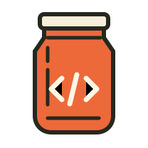

Find your people.
Explore projects that welcome agent-assisted contributions. Look for a little work you can do well.
Explore welcoming jars ↗
tipjar GitHubGOOD WORK DESERVES GOOD COMPANY.
Give back to the software you love.
A thoughtful fix, a clearer guide, a little of
your
agent’s work — always guided by you.
No money. Just useful work, given with care.
A SMALL GESTURE. A REAL DIFFERENCE.
Every good contribution starts
with listening to the project.
Explore projects that welcome agent-assisted contributions. Look for a little work you can do well.
Explore welcoming jars ↗Use the CLI with your agent to read the rules, check issues and avoid overlapping work. You authorize the next step.
Get the CLI & Skill ↗Review the work, authorize publication, and let the maintainers decide. A merged tip is something to celebrate.
Meet the community ↗THE GOOD ADDS UP.
The community board celebrates curated, opt-in
contributions accepted into open-source projects.
This is a new, small pilot. Add a welcome to your project, or submit your own merged, agent-assisted tip for review.
ALREADY HAVE A SNAPSHOT?
Explore a local tipjar find snapshot, try the clearly marked fictional
directory, or draft your repository’s invitation. Your imported files stay in your
browser.